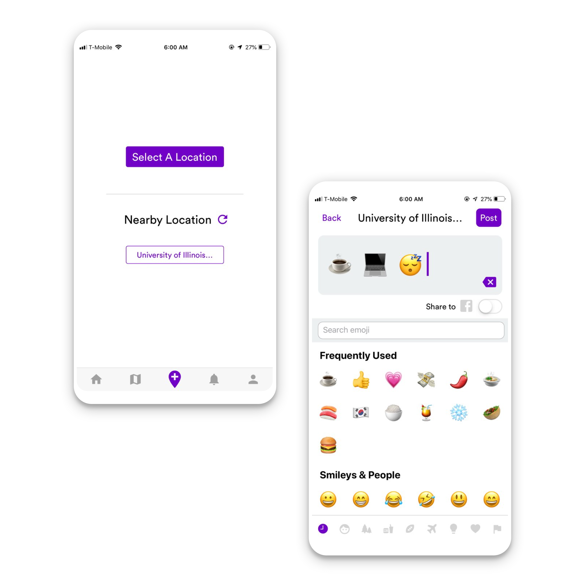
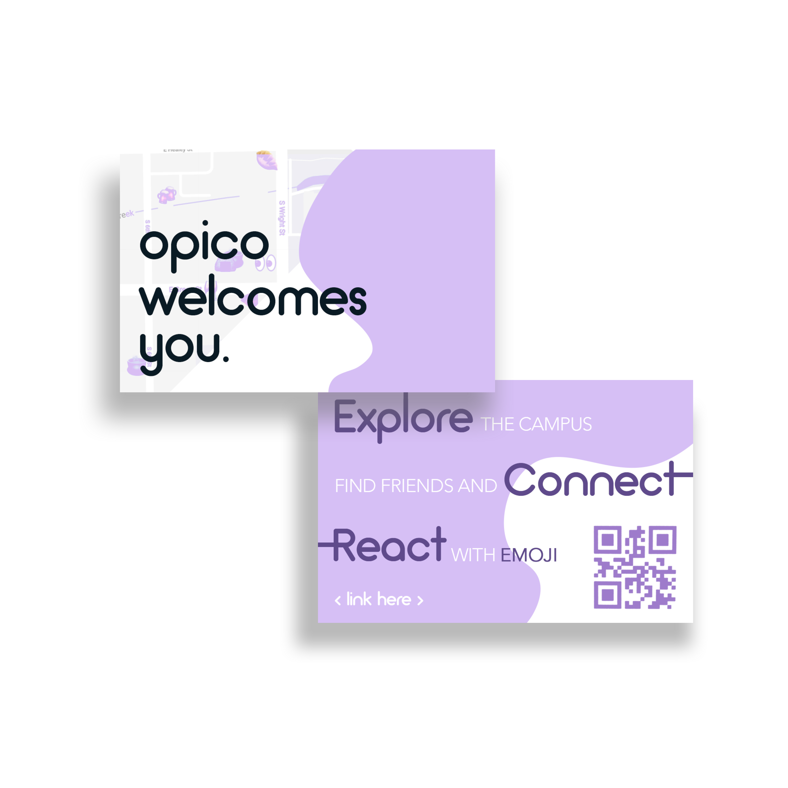
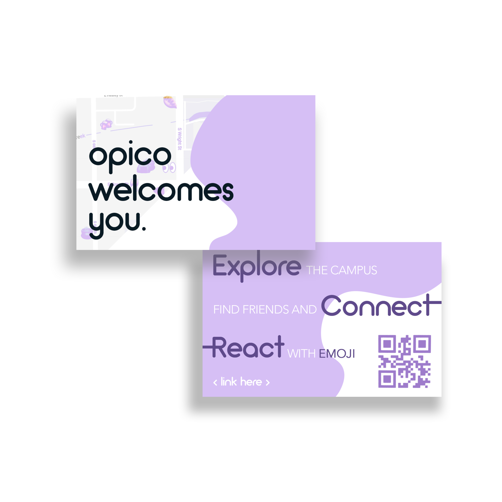

OPICO is an app for exploring and reacting to places with
only maximum 5 emojis.
For over a year working on the project, I worked closely with the developers
and researchers of the team to design the UI/UX of the app. I redesigned various user task flows
including posting reaction flow, designed new features and interface, performed
user studies (interviews, survey, emoji usage data analysis) and also actively
advertised the app by creating media contents such as posters, videos, etc.
As of today, OPICO has over 1000 registered users, 5000 emoji reactions,
and around 30 super users (users who posted on the app regularly for over a month or year).
My role
UI/UX Design, Prototyping, User Study, Front-End Development
Duration
1yr 2mo (~Current)
Exploring Places with Emoji Map
Overview
Emoji Map allows the users to explore their locations (whether it's a small town,
college campus, big city, or even a country) simply through "emojis on the map."
New nearby reactions or filtered reactions based on emoji filters that are shown in a scrolling card view adds more fun and visual aesthetics to the map.
The lack of texts and restrictiveness of the Emoji Map adds more fun of guessing and finding new locations and stories.
Design Process
I designed a map-based interface that is efficient and visually enjoyable for the users to
discover interesting places with personalized emoji filters. The filters are auto-updated based on the
user location, and selected by the frequency of the emoji patterns that are same with/similar to the filter.
Instead of looking for keywords such as "Brunch Place" or "Brunch in Chicago",
the users can select from the map an emoji filter, <‚òÄÔ∏è (sun) ‚òï (coffee)üç¥ (fork and knife)>, to view all the emoji
reactions to brunch places in Chicago.
Let me explain in detail the design through below wireframes and paragraphs.
The user has selected "Brunch in Chicago" filter represented by a sun, coffee, and fork & knife emojis.
The below reactions in a scrolling card view layout are the filtered results.
They contain the same <‚òÄÔ∏è (sun) ‚òï (coffee)üç¥ (fork and knife)> pattern
or a similar pattern we can assume that are related to "Brunch," such as <‚òÄÔ∏è (sun) ü•û (pancake) ‚òï (coffee)>.
You can see that this result does not only show reactions to one brunch place, but instead displays
any reactions to any locations that are related to "Brunch in Chicago."
This screen is when the user clicked on the "coffee" emoji on top-right from the previous screen.
As a result, the map focused to the coffee emoji, and the card view this time shows the information of
"Breakfast Town," which is represented by that coffee emoji.
Also, it shows multiple "Brunch"-related
reactions only to "Breakfast Town," and no other restaurants.
Inspirations
Design flows of apps like Google Map, Google Trips,
Swarm, and Airbnb inspired the card-view layout, filter-based search, and
several other features of the Emoji Map.
Takeaways
Updating an interface with multiple new features that still blends in well
with the rest of the UX requires deliberations on both uniqueness and familiarity.
Redesigning Post Reaction Flow

Overview
Post Reaction task is the main feature of OPICO, as it allows the users to post their emoji reactions so that others' can see and like.
The original design and flow of this task received some feedbacks that it did not reflect the user flow or logic very well.
I re-designed the posting flow, which had not been updated since it was initially designed.
Problem Identified
Post Reaction task has 2 main subtasks:
Set Location and Add Reaction, which should be completed in a sequential order.
However, multiple users gave us a feedback that the app's original interface treated these subtasks as one single task,
having them crammed in one interface, thus overwhelming the interface.
Also, it didn't suggest users to complete tasks step-by-step but instead allowed them to start reacting with emojis without setting their location first,
which logically does not make sense.
Design Process
In the above interface, if you want to add a location, you have to tap the "+" button to move to "Set Location" page, search for and select a location, and come back to the main page to add your reaction, which I found unnecessary.
I divided the two subtasks into separate pages so that when the users start Post Reaction task, they have to "Set a Location" first, before moving onto "Adding an Emoji" task.
-2-Step logical flow (location first, then react)
-Suggest nearby location for convenience
-“Back” and “Post” buttons integrated in header section
Below is the final animated prototype created with Adobe XD.
User Study
As we received similar user feedbacks for the original design,
I reached out to the users and walked them through the new design solution.
As a result, 12/14 users found the new design easier to understand and use as it had a clear
but connected division of two subtasks.
Takeaways
Simplifying an overwhelming design and understanding the logical flow
resulted in a better use case and interface.


 
